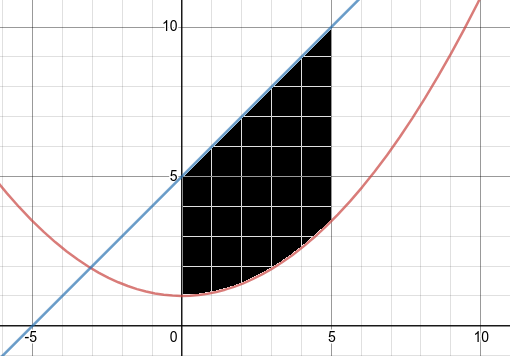

Section 1.1 Area Between Two Curves
How can we find the area between two curves? 
Note 1.1.2.
Both functions must be continuous on the interval [a,b] and \(f(x) \geq g(x) \) for all \(x\) in [a,b].
The area between f and g is equal to the area under f minus the area under g, so:
\begin{align*}
A \amp = \int_a^b f(x)dx - \int_a^b g(x)dx \\
\amp = \int_a^b f(x)-g(x)dx
\end{align*}
Additionally, we can apply this method to functions of y, using the general formula: \(A = \displaystyle \int_c^d w(y) - v(y) dy\text{.}\)
Example 1.1.3. Area Between Two Functions.
Let's try the example above, find the area between \(f(x)=x+5\) and \(g(x)=\dfrac{x^2}{10}+1 \) from 0 to 5:
\begin{align*}
A \amp = \int_a^b f(x)-g(x)dx \\
\amp = \int_0^5 (x+5)-(\dfrac{x^2}{10} + 1) dx \\
\amp = \int_0^5 x+5-\dfrac{x^2}{10} - 1 dx \\
\amp = \int_0^5 -\dfrac{x^2}{10} + x + 4 dx \\
\amp = \left[-\dfrac{x^3}{30} + \dfrac{x^2}{2} + 4x \right]_0^5 \\
\amp = \left( -\dfrac{(5)^3}{30}+\dfrac{(5)^2}{2} + 4(5) \right) - 0 \\
\amp = -\dfrac{125}{30} + \dfrac{25}{2} + 20 \\
\amp = -\dfrac{125}{30} + \dfrac{375}{30} + \dfrac{600}{30} \\
\amp = \dfrac{850}{30} \\
A \amp = \dfrac{85}{3}
\end{align*}